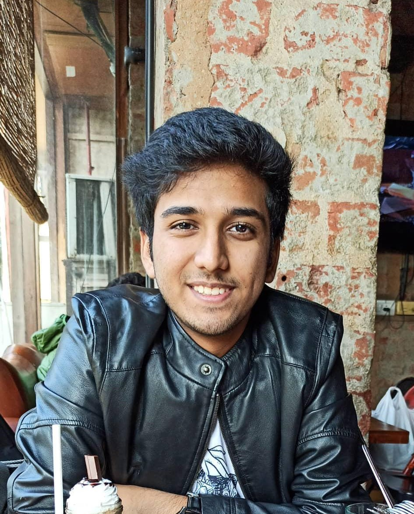

Harshit Aggarwal's Resume

Harshit Aggarwal
Machine Learning Enthusiast, Student
Email: harshitaggarwal5401@gmail.com
Portfolio
Education
SRM Institute of Science and Technology
B.Tech. Computer Science Engineering
2019-Present
DPS Vasant Kunj
CBSE : 89%
2017-2019
Amity International School G-46
CBSE : 9.6
2005-2017
Professional Experiences
Associate
Next Tech Lab, Chennai, Tamil Nadu
August 2019 - Present
- Developed and implemented various solutions for real time problems, with machine learning.
- Guided and helped new recruits in their research and product development projects pertaining to machine learning.
- Active researcher in the Domain of Machine Learning.
Executive
SRM Machine Intelligence Community, Chennai, Tamil Nadu
September 2019 - Present
- Conducted workshops on basic machine learning algorithms.
- Active researcher in the field of machine learning
Member
SRMKZILLA || Mozilla Campus Club || SRM-IST , Chennai, Tamil Nadu
August 2019 - January 2020
- Provided innovative solutions with Machine Learning